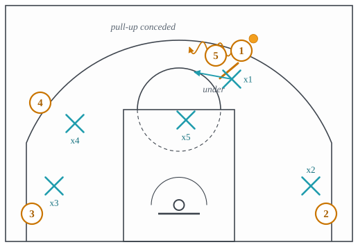
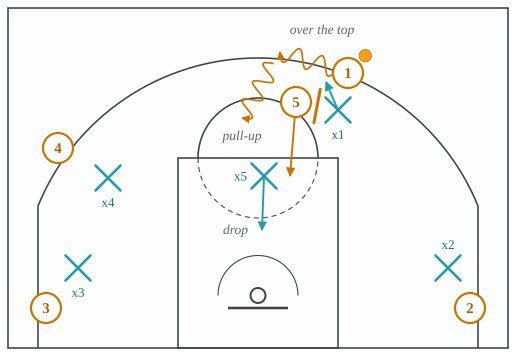
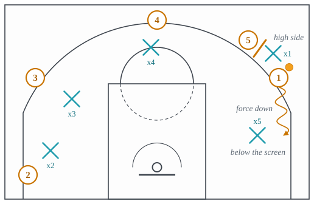
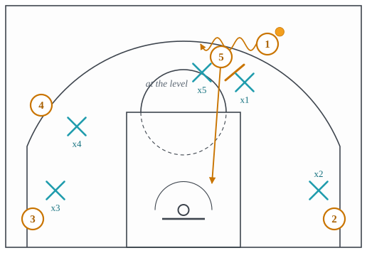
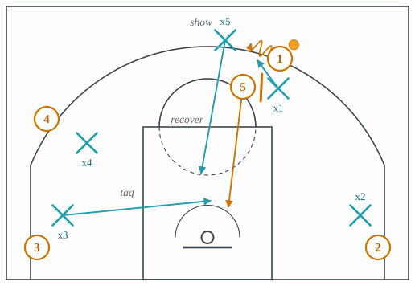
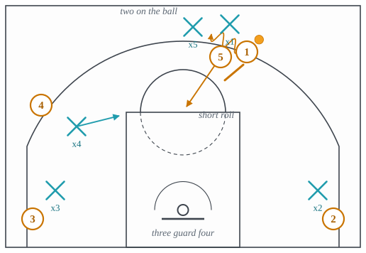

4.3: Pick-and-Roll Coverages
Chapter 4: Defense
Lecture 3.3 called the pick-and-roll the action that makes two defenders decide together. This lecture is about that decision. A ball screen puts a question to exactly two people, the handler’s defender and the screener’s defender, and every named coverage is a pre-agreed pair of answers: where the guard goes, and where the big goes. The pair is decided before the game, usually per opponent and sometimes per player, and a viewer who knows the five or six names can tell within one possession what a team has decided about the man with the ball.
The frame for all of it is man-to-man, so Section 1 sets that out. Section 2 is the guard’s half of the decision, over or under the screen. Sections 3 to 7 are the big’s half, from the most conservative answer to the most aggressive: drop, ice, at the level, hedge, blitz. Each coverage gets a card with four slots: what each defender is assigned, what the coverage concedes on purpose, what it requires of the players, and which action from Chapter 3 is built to beat it. The two remaining answers, switching the screen and the switch called by the big, have their own lecture, 4.5, because they change who is guarding whom for the rest of the possession.
1 Man-to-man, the frame
Man-to-man is the default arrangement of a defense: each defender is responsible for one attacker, wherever he goes. It is worth stating as a coverage rather than a fact, because it is a choice with a cost, and the cost is the ball screen. When one attacker sets a screen on another attacker’s defender, the two assignments collide, and for a beat one of the two defenders cannot do his job. Every coverage below is a rule for that beat. A zone, the subject of lecture 4.6, avoids the collision by not having assignments at all, and pays for it elsewhere.
Man-to-man is also not five separate duels. The three defenders who are not in the screen have jobs in every coverage, and those jobs, the tag, the low man, the nail, are the subject of lecture 4.4. This lecture names them where a coverage depends on them and leaves the teaching to the next one. The picture of the whole shape, with the ball on the wing and the other four defenders arranged around it, is the first figure of that lecture.
- Assignment
- Each defender guards one attacker. The two defenders in any screen resolve it by the coverage the team has called; the other three hold the shape of lecture 4.4.
- Concedes
- Whatever the called coverage concedes, plus the mismatch that follows any switch. Nothing is conceded by the frame itself.
- Requires
- Five players who can each guard one man, and a shared vocabulary, so that the coverage is called in one word and heard by both defenders in the screen.
- Beaten by
- Any action that puts two attackers on one defender for longer than the coverage’s rule covers: the pick-and-roll itself when the coverage is late, and the mismatch hunted after a switch.
2 Over or under: the guard’s half
The handler’s defender has one binary decision at every ball screen. He can fight over the top of it, staying attached to the handler’s hip and accepting the contact, or he can go under, sliding between the screener and the basket and meeting the handler on the far side (Figure 1). Over keeps the shooter contested and gives up the drive for a step. Under keeps the drive in front and gives up the shot.

The decision is made by the handler. Against a player who does not shoot from the arc, the defense goes under every time and dares him to prove otherwise. Against a shooter, it goes over, and every big’s coverage below is built on the assumption that the guard is coming over the top and needs help for the step he has lost. A defender who goes under a shooter has made the coverage call for his team, and made it wrong.
- Assignment
- The guard goes beneath the screen and meets the handler on the other side. The big stays home, usually in a drop.
- Concedes
- The pull-up jumper at the arc, uncontested.
- Requires
- A handler who will not make that shot, or a coach willing to give a few of them away to keep him out of the paint.
- Beaten by
- The shot, from any handler who has one; and the re-screen, since a defender who goes under can be screened again on the way back.
3 Drop
Drop coverage is the most common answer in the modern professional game and the one a viewer will see most. The big does not come to the screen. He stays back, near the free-throw line or lower, between the ball and the rim, and back-pedals as the handler comes off the screen so that the roller and the handler are both in front of him (Figure 2). The guard chases over the top. What the defense has decided is that the two shots it most wants to prevent are the layup and the lob, and that the shot it will live with is the mid-range pull-up in the space the drop leaves.

The drop puts the big where he is best, near the rim with no need to move his feet in space, and it needs no help from the other three defenders as long as the guard recovers. Its weakness is exactly the space it concedes. A handler who can make the pull-up from fifteen feet will take it all night, and a handler who can make it from the arc, coming off the screen into a three before the guard has recovered, breaks the coverage entirely. The snake of lecture 3.3 is built for the drop as well: the handler cuts back across the trailing guard, puts him on his back, and walks the big down into the paint with the roller behind him.
- Assignment
- The guard goes over the screen and chases. The big stays back at the level of the roll, between the handler and the rim, and gives ground, taking the layup and the lob away.
- Concedes
- The mid-range pull-up, and the floater over the dropped big.
- Requires
- A big who can stay in front of a guard while moving backward, and a guard who gets over the screen and back in front before the pull-up is comfortable.
- Beaten by
- A handler who makes the pull-up; the snake, which walks the drop into the paint; and the lob when the big commits to the handler a step too early.
4 Ice
Ice is a coverage for a side ball screen, one set on the wing rather than in the middle, and it is different in kind from the others because it is about direction. The handler’s defender does not fight over the screen at all. Before the screen is set, he jumps to the high side of the handler, between the handler and the screen, and forces the dribble down toward the baseline and the sideline, away from the screen and away from the middle of the floor (Figure 3). The big is already below the screen, at the level of the drive, waiting where the handler will arrive. The screen is never used.

The trade is the sideline for the middle. A handler driving baseline has the sideline on one side of him and a big on the other, the whole weak side of the floor is behind him and hard to pass to, and the defense has turned a two-man action into a one-man drive into a wall. What it gives up is the pull-up going toward the baseline, and the pop: the screener, unused, can step out to the arc where his defender is not. Ice is also called blue, down and push in different gyms, and all four words are the same instruction to the guard: send him down.
Ice has a precondition that the offense controls. If the corner on the ice side is filled by a shooter, the driving handler has a kick-out waiting and the low man has a shooter he cannot leave. Offenses that expect ice empty that corner, or fill it deliberately with a shooter, and the step-up screen of lecture 3.3 is the direct counter: it is set with the screener’s back to the baseline so that the way the guard is sending the handler is the way the screen goes.
- Assignment
- On a side screen, the guard jumps to the high side of the handler and forces him down toward the baseline, never over the screen. The big drops below the screen to the level of the drive.
- Concedes
- The baseline pull-up, and the pop by the unused screener.
- Requires
- A guard who gets to the high side before the screen is set, and a big who can stay in front on the baseline side without fouling. An empty corner on the ice side is the ideal; a filled one is a problem.
- Beaten by
- The step-up screen, which turns the direction the guard is forcing into the direction the screen sends; the pop; and a filled corner, where the drive becomes a kick-out.
5 At the level
At the level is the coverage between drop and hedge. The big does not stay back and does not jump out; he meets the handler at the level of the screen, on its basket side, so that the handler coming off it finds a defender at once and can neither turn the corner nor step into a comfortable pull-up (Figure 4). The guard chases over. The big’s job is to stop the ball for a beat, then get back to the roller as the guard recovers.

It takes the pull-up away, which is what the drop cannot do, and it does not leave the big stranded twenty-five feet from the rim, which is what the hedge risks. Its cost is the roller, for one beat, and the pocket pass: the bounce pass past the big’s hip to the screener rolling behind him. The coverage lives or dies on that beat, and on whether the low man is there to tag the roller while the big turns.
- Assignment
- The big meets the handler level with the screen, stops the ball, and recovers to the roller once the guard is back in front. The guard goes over.
- Concedes
- The roller for one beat, and the pocket pass to him.
- Requires
- A big quick enough to stop the ball and turn, a guard who recovers in one step, and a low man who tags.
- Beaten by
- The short roll, where the screener stops at the free-throw line and receives the pocket pass with the big still turning; and the slip, where he never sets the screen and goes before the big has arrived at the level.
6 Hedge
The hedge is the big jumping out above the screen, into the handler’s path, to stop him or force him to retreat, and then recovering to the roller (Figure 5). It is also called the show, and a hard hedge is one where the big stays out until the handler has picked the ball up. For a generation it was the default coverage, and it is still the answer against a handler who must not be allowed to turn the corner.

The hedge concedes the most of any two-man coverage and asks the most of the other three. While the big is above the arc, the roller is going to the rim with nobody on him, and the low man must leave his shooter to tag him. If the hedging big is slow to recover, the roller scores; if the low man is slow to tag, the roller scores; if the low man tags and the ball goes to the corner he left, the shooter scores. The coverage works when all three happen on time, and the modern offense’s answer to it is not to beat the hedge but to punish the rotation behind it: the short roll catches the pocket pass at the nail and plays 4-on-3; the slip goes before the hedge is set; the Spain pick-and-roll back-screens the hedging big on his way home.
- Assignment
- The big jumps above the screen to stop the handler, then recovers to the roller. The guard fights over and gets back in front. The low man tags the roller until the big is home.
- Concedes
- The roller and the pocket pass for the length of the show, and whatever the tagging low man leaves.
- Requires
- A big quick enough to show and recover, a guard who fights over, and a tag from the weak side every time. Three players, on time, or nothing.
- Beaten by
- The slip, the short roll into a 4-on-3, the pop when the big commits to the show, and the Spain back screen on the recovering big.
7 Blitz
The blitz is the hedge without the recovery. Both defenders go to the handler and stay there, trapping him at the screen with two bodies and taking the ball out of his hands (Figure 6). It is also called the trap, and it is the most aggressive answer a defense can give a ball screen, because it accepts the one arithmetic every other coverage is trying to avoid: three defenders against four attackers behind the ball.

Teams blitz for one of two reasons. The first is the handler: a scorer good enough that any coverage which leaves him with the ball is worse than any coverage which does not. The second is the screener: a big who cannot make the short roll decision, so that giving him the ball at the free-throw line with a 4-on-3 in front of him is a trade the defense is happy to make. When both are true, the blitz is the right call. When the screener can pass, the blitz is a turnover machine for the wrong team: the ball goes to the nail, the 4-on-3 of lecture 3.3 plays out, and the trapping defenders are spectators.
- Assignment
- Both defenders trap the handler at the screen and stay. The three defenders behind them zone up against four attackers, with the low man on the roller.
- Concedes
- A 4-on-3 behind the trap, and the screener at the free-throw line with the ball if the handler gets it out.
- Requires
- Two defenders who trap without fouling and without leaving a gap between them, and three behind who know the rotation. And a screener who cannot make the next pass.
- Beaten by
- The short roll, which is the action built for exactly this; the pop to a screener who shoots; and a handler who splits the trap.
8 Choosing a coverage
The names are the vocabulary; the decision is the scheme. A defense picks a coverage for each handler and each screener it will face, and usually a base coverage for the team with exceptions for two or three players. The rule of thumb runs along the spectrum above. The less the handler can shoot, the further back the big can stay: under and drop for a driver, at the level for a mid-range scorer, hedge or blitz for the handler who makes threes coming off the screen and cannot be given the space the drop leaves. The more the screener can pass and shoot, the less the defense can afford to hedge or blitz him, because both leave him the ball with the numbers.
A viewer can read the decision from the big’s first step. If he goes backward as the screen is set, it is drop or ice. If he holds still at the screen, it is at the level. If he goes forward, it is hedge or blitz, and the difference is whether he leaves. The guard’s first step tells the rest: over, under, or to the high side.
The idea to carry into lecture 4.4 is that none of these coverages is a two-man answer. Every one of them, even the drop, has a moment when the roller is between the two defenders in the screen and neither can reach him, and what happens in that moment is decided by a third defender who was not in the screen at all. That third defender is the low man, and the next lecture is about him.